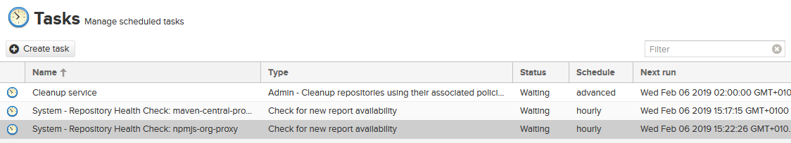

Nexus 3 : Installation et Configuration
Version des outils
| Os / Tool | Version |
|---|---|
| Nexus 3 | 3.15.0+ |
| Nexus 2 | 2.14.5-02 |
Todo
- Apt plugin
- Docker repositories
- Content Selector
- Cleanup Policies
- Capabilities
- Tasks
Note en vrac
Amélioration de Repository Health Check (RHC) depuis la 3.3.
Fonctionnalité d'analyse des licences.
Concernant les scripts de configuration :
Système très curieux mêlant rest API et groovy script.
On upload un script groovy qu'on éxécute ensuite via rest API (curl).
Techno encore jeune la javadoc montre qu'on peut "créer" mais pas deleter.
Il possible de faire un playbook d'installation/configuration mais cela semble très couteux.
Pas mal pour avoir un démarrage rAPIde mais néanmoins certain option manque (exemple sur les repository maven les valeurs "Max component Age" et "Max medata age" )
La rest API ne semble pas faire mieux.
Procédure d'installation docker
Etape 1: Deployer le Nexus 3 depuis l'image officielle
mkdir /some/dir/nexus-data && chown -R 200 /some/dir/nexus-data
docker run -d -p 8081:8081 --name nexus -v /some/dir/nexus-data:/nexus-data sonatype/nexus3
Etape 2: Supprimer les repositories par défaut

Etape 3: Executer les groovy scripts pour peupler le Nexus 3
Etape 4: Configurer le non automatisable
Note : L'activation du RPC entraine automatiquement la création de tasks 
Etape 5: Modifier la conf de nexus
cd $data-dir/etc
echo "nexus.assetdownloads.enabled=true" >> nexus.properties
sudo docker service update nexus_nexus
Etape 6: Faire les recommandations de la doc
- Changer le mot de passe administrateur et l'adresse email.
- Faire la configuration SMTP.
- Configurer les proxy HTTP et HTTPS.
- Créer une procédure de backup.
Comparatif Artifactory Nexus ProGet
| Artifactory | Nexus 3 | ProGet | |
|---|---|---|---|
| Bower | X | X | X |
| Docker | X | X | X |
| GitLFS | X | X | |
| Maven | X | X | X |
| .NET/NuGet | X | X | X |
| npm | X | X | X |
| PyPi | X | X | |
| Raw | X | X | X |
| RubyGems | X | X | X |
| Yum | X | X | |
| Apt | X | C | |
| Conan | X | C | |
| CPAN | C | ||
| Helm | X | C | |
| P2 | X | C | |
| R | X | C | |
| Chef | X | ||
| CocoaPods | X | ||
| Go | X | ||
| Gradle | X | ? | |
| Ivy | X | ? | |
| Opkg | X | ||
| PHP Composer | X | ||
| Puppet | X | ||
| SBT | X | ||
| Vagrant | X | ||
| VCS | X | ||
| Powershell | X | ||
| Chocolatey | X | ||
| Romp | X | ||
| VSIX | X | ||
| Upack | X |
De Nexus 2 à Nexus 3
| Fonctionnalités | 2.x OSS | 2.x Pro | 3.x OSS | 3.x Pro |
|---|---|---|---|---|
| Bower | X | X | ||
| Docker | X | X | ||
| Maven | X | X | X | X |
| npm | Limité | Limité | X | X |
| NuGet | X | X | X | X |
| PyPI | X | X | ||
| Ruby Gems | X | X | ||
| Yum | X | X | X | X |
| Clusters haute disponibilité | X | |||
| Plug-in S3 Blobstore | X | X | ||
| Passage de 2x à 3x | X | X | ||
| Déploiement illimité | X | X | X | X |
| Recherche de composants | Limité | X | X | X |
| Téléchargement artefact tiers dans IU | Limité | Limité | X | X |
| Repository Health Check (RHC) | X | X | X | X |
| Métadonnées personnalisées | X | Prévu | ||
| Sauvegarde et reprise améliorée | X | X | ||
| API d'approvisionnement | X | X | ||
| REST | X | X | X | X |
| Plug-ins | X | X | Nexus Exchange | Nexus Exchange |
| Intégration open source | X | X | X | X |
| Support pour jeton d'authentication | X | X | X | |
| Contrôles accès personnalisés | X | X | X | X |
| Cible repository / Sélecteurs de contenu | X | X | X | X |
| LDAP d'entreprise | X | X | ||
| P2 | X | Communauté | Communauté | |
| OBR | X | Prévu | Prévu | |
| Crowd | X | X | ||
| Proxy intelligent | X | Prévu | ||
| Staging et builds | X | X | ||
| Aide de la communauté | X | X | X | X |
| Support pour entreprises | X | X |
Tarifications
| Artifactory | Nexus 3 | |
|---|---|---|
| Pro | 2950 $ par an | 10$ par utilisateurs par mois |
| Pro X | 14400 $ par an | |
| Entreprise | 29500 $ par an | |
| Entreprise + | $$$$$ |
Note artifactory est "Unlimited number of users"
Sonatype Nexus 3 documentation
Download
Dernière version de Nexus 3 : 3.15.0-01 (2019-01-15) Disponible sous trois formes :
- Archives (Unix/Windows/OSX).
- Docker Image.
- Cloud Templates.
System Requirements
- Avoir java 8 et un utilisateur dédié.
- Augmenter la limit du nombre de fichier ouvrable par l'utilisateur nexus "nexus - nofile 65536". L'image docker est configuré comme il faut mais si besoin on peut la démarrer avec le flags : "--ulimit nofile=65536:65536"
- Les paramètres de la JVM sont dépendants de la RAM disponible sans toutefois dépasser les 4GB Max.
- Laisser les params de la JVM par défaut à min 1200MB et max <4GB.
| Physical Memory | Example Maximum Memory Configuration |
|---|---|
| 4GB | -Xms1200M -Xmx1200M -XX:MaxDirectMemorySize=2G |
| 8GB | -Xms2703M -Xmx2703M -XX:MaxDirectMemorySize=2703M |
| 12GB | -Xms4G -Xmx4G -XX:MaxDirectMemorySize=4014M |
| 16GB | -Xms4G -Xmx4G -XX:MaxDirectMemorySize=6717M |
| 32GB | -Xms4G -Xmx4G -XX:MaxDirectMemorySize=17530M |
| 64GB | -Xms4G -Xmx4G -XX:MaxDirectMemorySize=39158M |
Pas de NFS pour les blobstore. Si il n'y a pas le choix il faut du NFS v4 car NFS v3 est connu pour des problèmes de compatibilités.
Upgrade Compatibility - Repository Manager 2 to 3
On ne peut qu’upgrader que d'une version 2.14.1 + vers une 3.1 +.
On ne peut qu’upgrader que d'une OSS vers une OSS ou d'une PRO vers une PRO.
On ne peut upgrader que sur une version vanilla de la 3.y (fresh install).
Version recommandée pour l'upgrade 2.14.5+
Matrice de migration :
| Version 2 | Version 3 | Minimum Lifecycle Firewall compatible IQ Server |
|---|---|---|
| 2.14.8 | 3.12.1 | 1.46.0 |
| 2.14.6 | 3.8.0 | 1.42.0 |
| 2.14.5 | 3.7.1 | 1.33.0 |
| 2.14.4 | 3.4.0 | Not Supported |
| 2.14.3 | 3.2.1 | Not Supported |
| 2.14.2 | 3.2 | Not Supported |
| 2.14.1 | 3.1 | Not Supported |
Repository Manager Pro Features
Atlassian Crowd Support
Il s'agit d'un système de sso vendu par Atlassian. La version pro supporte nativement cette fonctionnalité.
Staging and Build Promotion
Permet d'automatiser directement au sein de Nexus 3 la promotion de component entre les phases de builds pour passer d'un repository de 'staging' à un repository de 'production'.
Tagging
Permet de "taguer" un ensemble de component pour les associer les uns autres.
Fonctionne de pair avec la fonctionnalité de staging de Nexus 3.
User Token Support
Permet d'utiliser des token en lieu et place des mots de passes.
High Availability
Permet de clusteriser Nexus 3.
Repository Health Check
Fonctionnalité de check des components pour notamment l'intégrer dans un pipeline DevSecOps.
Permet de détecter automatiquement les risques de sécurité des projets opensource.
Fonctionne "à la manière" d'un xray.
Customer Success
Coaching spécifique dédié au souscripteur.
Enterprise Support
Support.
Repository Manager Concepts
Components
Le terme employé par Sonatype pour désigner un "artifact, package, bundle, archive".
Assets
Eléments constituant un composant. Par exemples un jar et son pom.xml forme un artifiact maven.
Components in Repositories
Le repository est l'endroit qui rend accessible les composants.
Installation
Nexus 3 est une webapps java totalement autonome. Il existe deux méthodes "d'installation" de nexus :
- Via l'archive de distribution classique.
Il suffit de dézipper le contenu de l'archive (/opt/nexus) et d'exécuter bin/nexus start. L'application est démarrée lorsque le message de log de la console "Started Sonatype Nexus". - Via l'image docker.
Exécuter la commande suivante :
mkdir /some/dir/nexus-data && chown -R 200 /some/dir/nexus-data
docker run -d -p 8081:8081 --name nexus -v /some/dir/nexus-data:/nexus-data sonatype/nexus3
Directories
Après l'installation deux répertoires apparaissent :
- nexus-3.XX.X-XX Contient l'application Nexus Repository Manager.
- sonatype-work Contient l'ensemble des repositories, components et autres. Le dossier sonatype-work/nexus3/blobs est le plus important, c'est lui qui contient les repositories.
Configuring the Runtime Environment
La configuration du produit se situe dans trois répertoires distinct :
- $data-dir/etc Contient le fichier nexus.properties qui possède quelques variables de configuration notamment l'ip et le port.
- $install-dir/bin Contient le fichier nexus.vmoptions qui possède quelques variables de configuration notamment la localisation du data directories.
- $install-dir/etc Contient les configuration des middlexare utilisé par Nexus 3. Pour savoir "où" modifier "quoi" autant se rendre sur la documentation officielle.
Post Install Checklist
- Etape 1: Changer le mot de passe administrateur et l'adresse email.
- Etape 2: Faire la configuration SMTP.
- Etape 3: Configurer les proxy HTTP et HTTPS.
- Etape 4: Créer une procédure de backup.
Upgrading
Why Upgrade to Nexus Repository Manager 3 ?
- Nouveau format de repository.
- Interface utilisateur améliorée
- Recherche de composants performante
- Navigation dans le référentiel universel
- Métadonnées améliorées
Upgrade Process and Expectations
What Is Upgraded
- Stockage des compoent des fichiers aux blobs :
On passe du système de fichier à plat de Nexus 2 au blob de Nexus 3.
C'est le plus gros changement. - Les metadata associées aux components passe de multiple fichier à la base OrientDB.
- Les URLs de déploiement et d'accès sont maintenant différentes.
What Is Not Upgraded Parmis les plus impactant :
- virtual repositories
- Java VM settings, including custom system properties or variables
- operating system nexus service scripts
- operating system optimization, such as increasing allowable open file handles
- environment variables affecting values used to control the repository manager
- third-party or custom-developed plugins
Repository Format Support
- npm
- NuGet
- Site/Raw
- Maven2
- RubyGems
Data Transfer Methods
- HTTP Downloading Nécessaire si le Nexus 2 et 3 sont sur deux machines différentes.
- File System Copying
Possible si et seulement si le Nexus 2 et 3 sont configurés pour accéder au même espace de stockage.
C'est la méthode alternative - File System Hard Linking
Possible si et seulement si le Nexus 2 et 3 sont configurés pour accéder au même espace de stockage.
C'est la méthode la plus rAPIde.
Upgrade Details for Specific Elements
- Repository IDs
Attention les repository ID n'existe plus dans Nexus 3.
Ils sont néanmoins "case sensitive" pendant le process de migration. - Repository Groups
S'assurer que dans un groupe l'ensemble des repositories soient éligibles.
Au risque de ne pas upgrader le groupe entier... - HTTP(S) Proxy Configuration Ils sont à configurer manuellement dans chaque environment.
Security Compatibility
- Version 2 Roles Les roles sont upgradé du Nexus 2 vers le Nexus 3. Ils sont préfixés de nx2-.
- Version 2 Repository Targets and Target Privileges Les Repository targets de Nexus 2 deviennent des Content Selector dans Nexus 3.
Upgrade Procedure
Lire la documentation officielle.
Etape 0 : Indisponibilité du nexus
Pendant la phase de migration le Nexus 2 reste disponible.
Une étape de "synchronisation" permet de récupérer les éventuelles "push" sur le nexus pendant la migration jusqu'à une certaine étape.
A la fin le Nexus 2 doit être désactivé au profit du Nexus 3, il est préférable dès lors d’effectuer l’opération en HNO et s’assurer que Jenkins n’effectue aucun deploy pendant la migration.
Designing Your Upgrade Plan
- Identification of a maintenance window for version 2, allowing the upgrade to proceed without interruption.
- Selection of an installation scenario that best supports your upgrade plan.
- Selection of an upgrade method.
- Getting access to a system storage , as well as location for content to be transferred to.
- Identification of configurations that may result in failure, and prevent upgrade of certain components.
- Review of security settings , and associated differences between version 2 and version 3.
- Considerations for optimization.
Etape 1 : S'assurer que le nexus 2 est en 2.14.11-01
Le nexus 2 doit être dans la plus haute version disponible au moment de l'update.
Ceci permet de s’affranchir d’éventuelle problème d’incompatibilité de migration entre les versions et corrige d’éventuelle bug concernant la procédure d’update automatique.
Etape 2 : Optimisation pre-migration
- Nexus 2 : Désactiver les "System feeds".
- Nexus 2 : Supprimer les Snapshots.
- Nexus 2 : Désactiver les "Scheduled task for releases".
Etape 3 : Activer les "Upgrade Capability" de Nexus 2 et Nexus 3
Dans Nexus 2 / 3 en tant qu'admin
Etape 4 : Créer les blobstore cible
Si ce n'est pas déjà fait (à l'instanciation du Nexus 3). Il faut créer les blobstores via le sript de provionning.
Etape 5 : Lancer la procédure de migration
Dans Nexus 3 en tant qu'admin.
Dans Administation --> System --> Upgrade.
Etape X
La migration est terminée, passons aux post migration tasks :
- Nexus 3 : Checker les repositories group.
- Nexus 3 : Checker les RHC.
- Nexus 3 : Checker les settings (Imap, Proxy).
- Nexus 3 : Nettoyer les roles et la security.
- Nexus 3 : Vérifier les roles des utilisateurs admin et anonymous.
- Nexus 3 : Configurer le mot de passe admin.
- Nexus 3 : Créer les taches de clean des blobstores maven et de backup.
- Nexus 3 : Retirer la capabilities upgrade.
- Nexus 2 : Stopper le service.
- Client : Modifier toutes les URLs des .m2/settings.xml et .npmrc
Configuration/Navigation
User Interface
En se connectant on arrive sur l'interface de base.
En tant qu'utilisateur anonyme on peut accéder à l'interface de recherche rAPIde et avancé et naviguer dans les repositories.
En tant qu'admin on peut manager via le bouton engrenage.
En tant qu'utilisateur identifié possédant les droits suffisants, on peut uploader depuis l'interface un component.
Administration Menu
L'interface d'administration est découpée en 5 sous menu.
- Repository, gère les repositories, blob stores, cleanup policies et Content Selector.
- IQ Server, gère la connexion au IQ Server.
- Security, gère tous ce qui est relatif à la sécurité (Authentication, Authorization, Privileges... ).
- Support, fonctionnalité de monitoring du serveur.
- System, la configuration générale de l'outil.
Dans l'interface Repository la notion de Blob stores et Content selectors est importante.
Source
Sonatype Global
Nexus 3 Dowloads
Docker Sonatype/Nexus 3
Nexus 3 OSS Global
Nexus 3 Communauté
Nexus Comparatif
Nexus 3 Release Notes 2019
Nexus 3 Run as a Service
Nexus 3 Run Behind a Reverse Proxy
Nexus 3 Upgrade Procedures
Nexus 3 Quick Start Maven/Npm Nexus 3 Storage Guide Nexus 3 Scripting Examples